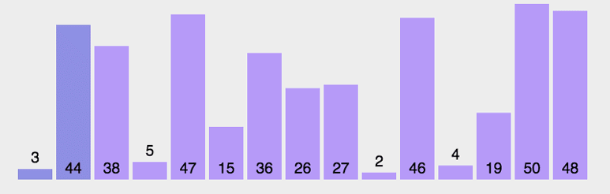

原文出处:本文由博客园博主Nolinked提供。
原文连接:https://www.cnblogs.com/pungchur/p/12080326.html
原文连接:https://www.cnblogs.com/pungchur/p/12080326.html
冒泡排序
依次比较相邻两元素，若前一元素大于后一元素则交换之，直至最后一个元素即为最大；
然后重新从首元素开始重复同样的操作，直至倒数第二个元素即为次大元素；
依次类推。如同水中的气泡，依次将最大或最小元素气泡浮出水面。

实现
# 冒泡排序
def bubble_sort(li):
# 建立一个标识符
flag = False
for i in range(len(li)-1):
for j in range(len(li)-i-1):
if li[j] > li[j+1]:
li[j], li[j+1] = li[j+1], li[j]
flag = True
# 如果没进行交换，则本身有序，直接break
if not flag:
break
return li算法分析
- 平均时间复杂度：O(n2)，标准的内外两层循环
- 最好时间复杂度：O(n)，如果有序，那么第一趟就ok了
- 最坏时间复杂度：O(n2)
- 空间复杂度：O(1)
- 稳定性：稳定的
选择排序
首先初始化最小元素索引值为首元素，依次遍历待排序数列，若遇到小于该最小索引位置处的元素则刷新最小索引为该较小元素的位置，直至遇到尾元素，结束一次遍历，并将最小索引处元素与首元素交换；
然后，初始化最小索引值为第二个待排序数列元素位置，同样的操作，可得到数列第二个元素即为次小元素；以此类推。

实现
# 选择排序 O(n^2)
# 从第一个元素开始选择最小的元素放在第一位，然后再选择第二个元素
def select_sort(li):
for i in range(len(li)-1):
# 第i趟 无序区范围i到最后
min_pos = i # 无序区最小值位置
for j in range(i+1, len(li)):
if li[j] < li[min_pos]:
min_pos = j
li[i], li[min_pos] = li[min_pos], li[i]算法分析
- 平均时间复杂度：O(n2)，嵌套双循环
- 最好时间复杂度：O(n2)，每次要找最大最小肯定是要遍历一遍的
- 最坏时间复杂度：O(n2)
- 空间复杂度：O(1)
- 稳定性：稳定的
插入排序
将列表分为有序区和无序区两个部分，最初有序区只有一个元素，即第一个元素。
然后每次从无序区选择一个元素，插入到有序区中，直到无序区为空。
如下图，橙色为有序区，浅蓝色为无序区。

实现
# 选择排序 O(n2)
def insert_sort(li):
# i表示从下标1开始的数字， 第二个元素
for i in range(1, len(li)):
tmp = li[i]
j = i - 1
# 只要往后挪就循环
while j >= 0 and li[j] > tmp:
# 如果j = -1停止挪， 如果li[j]小于tmp停止挪
li[j + 1] = li[j]
j -= 1
# j位置在循环结束的时候要么是-1要么是比tmp小的值
li[j+1] = tmp算法分析
- 平均时间复杂度：O(n2)
- 最好时间复杂度：O(n)，如果有序，那么每个元素都已经在在它的待排子序列的合适位置，不用找合适位置
- 最坏时间复杂度：O(n2)
- 空间复杂度：O(1)
- 稳定性：稳定的
~>.<~